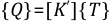
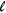
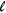

In the radiation matrix method, for a system of two radiating surfaces, Equation 6–14 can be expanded as:
(6–27) |
or
(6–28) |
where:
K' cannot be calculated directly since it is a function of the unknowns Ti and Tj. The temperatures from previous iterations are used to calculate K' and the solution is computed iteratively.
For a more general case, Equation 6–12 can be used to construct a single row in the following matrix equation:
(6–29) |
such that:
(6–30) |
(6–31) |
Solving for {Q}:
(6–32) |
and therefore:
(6–33) |
Equation 6–32 is analogous to Equation 6–12 and can be set up for standard matrix equation solution by the process similar to the steps shown in Equation 6–27 and Equation 6–28.
 | (6–34) |
[K'] now includes T3 terms and is calculated in the same manner as in Equation 6–28). To be able to include radiation effects in elements other than LINK31, MATRIX50 (the substructure element) is used to bring in the radiation matrix. MATRIX50 has an option that instructs the solution phase to calculate [K']. The AUX12 utility is used to create the substructure radiation matrix. AUX12 calculates the effective conductivity matrix, [Kts], in Equation 6–32, as well as the view factors required for finding [Kts]. The user defines flat surfaces to be used in AUX12 by overlaying nodes and elements on the radiating edge of a 2-D model or the radiating face of a 3-D model.
Two methods are available in the radiation matrix method to calculate the view factors (VTYPE command):
The non-hidden procedure calculates a view factor for every surface to every other surface whether the view is blocked by an element or not. In this procedure, the following equation is used and the integration is performed adaptively.
For a finite element discretized model, Equation 6–15 for the view factor Fij between two surfaces i and j can be written as:
(6–35) |
where:
| m = number of integration points on surface i |
| n = number of integration points on surface j |
When the dimensionless distance between two viewing surfaces D, defined in Equation 6–36, is less than 0.1, the accuracy of computed view factors is known to be poor (Siegal and Howell([88])).
(6–36) |
where:
| dmin = minimum distance between the viewing surfaces A1 and A2 |
| Amax = max (A1, A2) |
So, the order of surface integration is adaptively increased from order one to higher orders as the value of D falls below 8. The area integration is changed to contour integration when D becomes less than 0.5 to maintain the accuracy. The contour integration order is adaptively increased as D approaches zero.
The hidden procedure is a simplified method which uses Equation 6–15 and assumes that all the variables are constant, so that the equation becomes:
(6–37) |
The hidden procedure numerically calculates the view factor in the following conceptual manner. The hidden-line algorithm is first used to determine which surfaces are visible to every other surface. Then, each radiating, or “viewing”, surface (i) is enclosed with a hemisphere of unit radius. This hemisphere is oriented in a local coordinate system (x' y' z'), whose center is at the centroid of the surface with the z axis normal to the surface, the x axis is from node I to node J, and the y axis orthogonal to the other axes. The receiving, or “viewed”, surface (j) is projected onto the hemisphere exactly as it would appear to an observer on surface i.
As shown in Figure 6.5: Receiving Surface Projection, the projected area is defined by first extending a line from the center of the hemisphere to each node defining the surface or element. That node is then projected to the point where the line intersects the hemisphere and transformed into the local system x' y' z', as described in Kreyszig([23])
The view factor, Fij, is determined by counting the number of rays striking the projected surface j and dividing by the total number of rays (Nr) emitted by surface i. This method may violate the radiation reciprocity rule, that is, AiFi-j ≠ Aj Fj-i.
When the radiation view factors between the surfaces of axisymmetric bodies are calculated (GEOM,1,n command), special logic is used. In this logic, the axisymmetric nature of the body is exploited to reduce the amount of computations. The user, therefore, needs only to build a model in plane 2-D representing the axisymmetric bodies as line “elements.”
Consider two axisymmetric bodies A and B as shown in Figure 6.6: Axisymmetric Geometry.
The view factor of body A to body B is calculated by expanding the line “element” model into a full 3-D model of n circumferential segments (GEOM,1,n command) as shown in Figure 6.7: End View of Showing n = 8 Segments.

View factor of body A to B is given by
(6–38) |
where:
Fk -
 = view factor of segment k on body A to segment
 on body B = view factor of segment k on body A to segment
 on body B |
The form factors between the segments of the axisymmetric bodies are computed using the method described in the previous section. Since the coefficients are symmetric, the summation Equation 6–38 may be simplified as:
(6–39) |
Both hidden and non-hidden methods are applicable in the computation of axisymmetric view factors. However, the non-hidden method should be used if and only if there are no blocking surfaces. For example, if radiation between concentric cylinders are considered, the outer cylinder can not see part of itself without obstruction from the inner cylinder. For this case, the hidden method must be used, as the non-hidden method would definitely give rise to inaccurate view factor calculations.
A space node may be defined (SPACE command) to absorb all energy not radiated to other elements. Any radiant energy not incident on any other part of the model will be directed to the space node. If the model is not a closed system, then the user must define a space node with its appropriate boundary conditions.